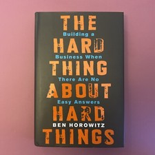

Why Did Vijay Mallya Fail?
The King of Good Times' Airline of Bad Math
📜 What Happened
The liquor baron launched Kingfisher Airlines as a flying five-star hotel — and ran it like a party: bought loss-making Air Deccan to go international faster, kept lavish service amid fuel spikes, funded losses with ₹9,000 crore of bank loans (much of it personally guaranteed), all while sponsoring F1 teams, IPL cricket, and yacht celebrations as employees went unpaid. The airline died in 2012; Mallya left for London in 2016 and has fought extradition since — 'King of Good Times' turned fugitive.
☠️ The Fatal Mistake
Running an airline (brutal-margin business) on a lifestyle brand's logic — image spending sustained precisely when the business screamed for austerity.
🧠 The Lesson (Free for You)
The brand is not the business. Parties on borrowed money have exact end-dates — and personal guarantees mean the good times get repossessed with interest.
📕 The Antidote Book

Most business books tell you how to do things right; Horowitz tells you what to do after everything has gone wrong. Drawing on nearly losing his company Loudcloud/Opsware multiple times before selling it for $1.6B, he…
📖 OPEN THE FULL INTERACTIVE BREAKDOWN →Searchable, filterable, free forever — they paid billions; your lesson is free.